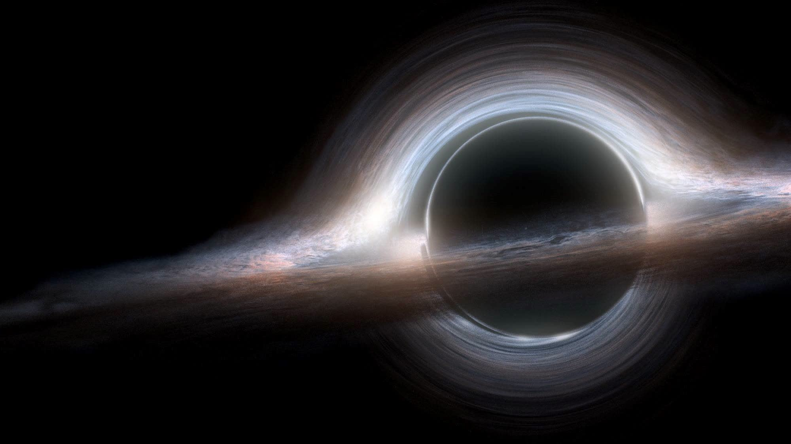
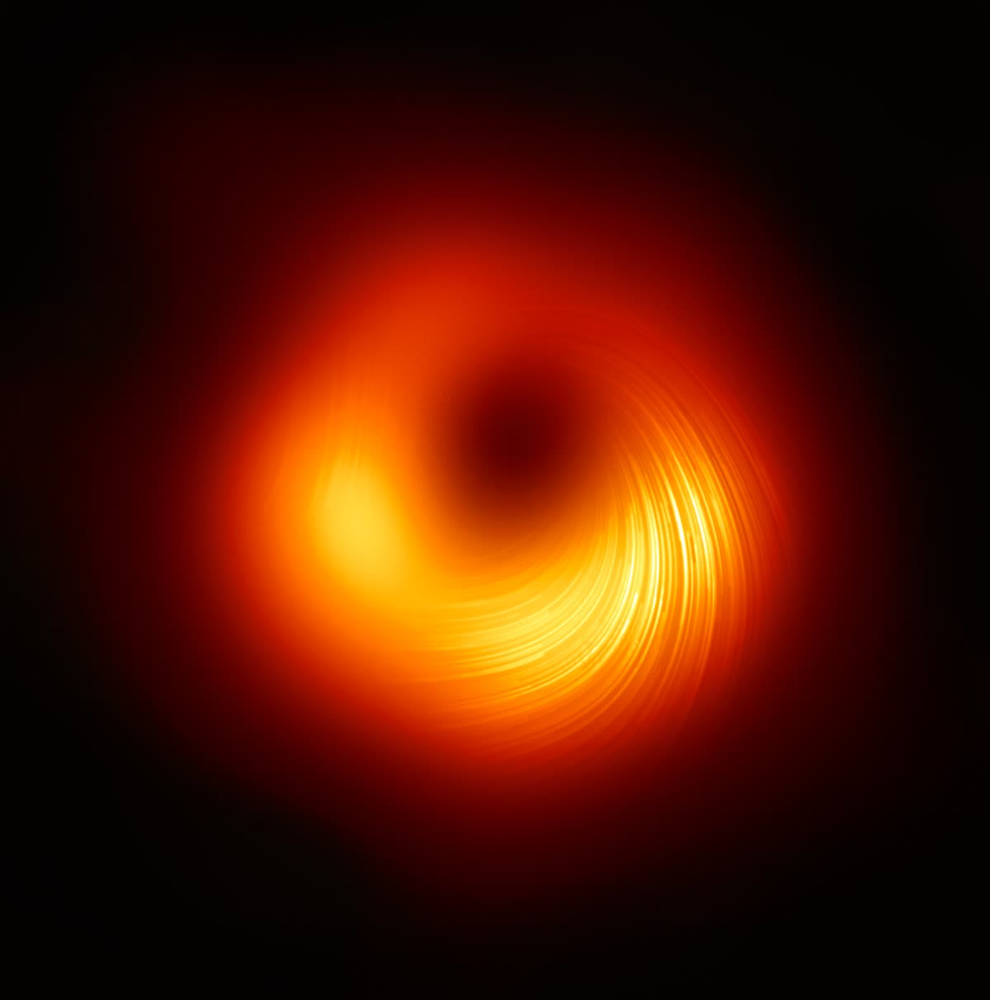
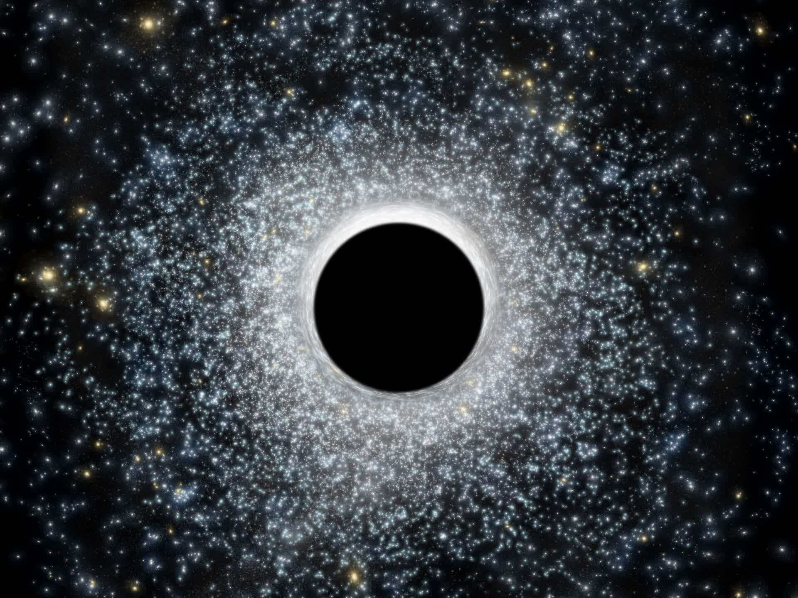
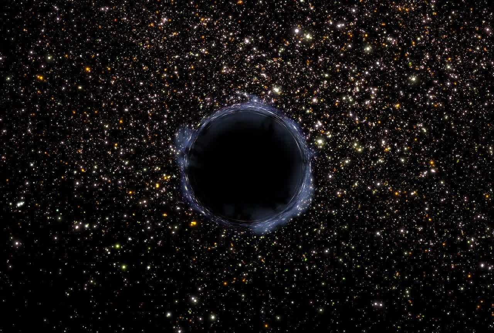

Чёрные дыры
Чёрные дыры — самые загадочные и экстремальные объекты во Вселенной. Узнайте о типах чёрных дыр, их свойствах и открытиях, изменивших наше понимание космоса.
Что такое чёрная дыра?
Чёрная дыра — область пространства-времени с настолько сильной гравитацией, что ничто, даже свет, не может её покинуть. Образуется при коллапсе массивных звёзд или в результате слияния других чёрных дыр. В центре чёрной дыры находится сингулярность — точка с бесконечной плотностью, а граница называется горизонтом событий.
Строение чёрной дыры
- Сингулярность — центральная точка с максимальной плотностью и нулевым объёмом.
- Горизонт событий — граница, за которой ничто не может вернуться наружу.
- Аккреционный диск — раскалённое вещество, вращающееся вокруг чёрной дыры и испускающее рентгеновское излучение.
- Релятивистские джеты — мощные струи вещества, выбрасываемые вдоль оси вращения (у некоторых чёрных дыр).
Классификация чёрных дыр
- Звёздные — масса 3–100 масс Солнца, образуются при гибели массивных звёзд.
- Промежуточные — масса сотни–тысячи масс Солнца, редки, связаны со скоплениями звёзд.
- Сверхмассивные — миллионы–миллиарды масс Солнца, находятся в центрах галактик.
- Первичные — гипотетические, могли возникнуть в ранней Вселенной.
Влияние чёрных дыр на Вселенную
- Формируют эволюцию галактик, регулируют звездообразование.
- Являются источниками гравитационных волн при слиянии.
- Аккреционные диски и джеты влияют на межгалактическую среду.
- Изучение чёрных дыр помогает проверять Общую теорию относительности.
Исторические открытия и современные исследования
- Термин «чёрная дыра» предложил Джон Уилер в 1967 году.
- В 2015 году впервые обнаружены гравитационные волны от слияния чёрных дыр (LIGO).
- В 2019 году получено первое изображение тени чёрной дыры (M87*) с помощью Event Horizon Telescope.
- В центре Млечного Пути находится сверхмассивная чёрная дыра Стрелец A*.
- Современные телескопы (например, JWST) продолжают изучать окрестности чёрных дыр.
Типы чёрных дыр

Звёздная чёрная дыра
Образуется при коллапсе массивной звезды. Масса: 3–100 масс Солнца.

Сверхмассивная чёрная дыра
Находится в центрах галактик. Масса: миллионы–миллиарды масс Солнца.

Промежуточная чёрная дыра
Редкий тип, масса: сотни–тысячи масс Солнца. Связаны со скоплениями звёзд.

Первичная чёрная дыра
Гипотетические чёрные дыры, образовавшиеся в ранней Вселенной.
Интересные факты о чёрных дырах
- Горизонт событий — граница, за которой ничто не может покинуть чёрную дыру, даже свет.
- В 2019 году впервые получено изображение тени чёрной дыры (M87*).
- Чёрные дыры могут сливаться, создавая гравитационные волны, обнаруженные LIGO/Virgo.
- Считается, что в центре Млечного Пути находится сверхмассивная чёрная дыра Стрелец A*.